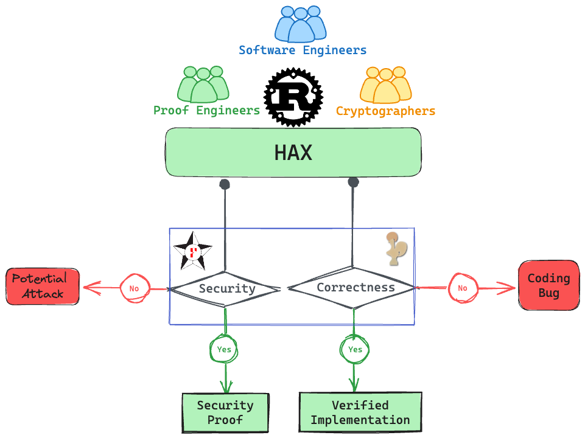

This has been in the making for a while now.
But we are finally happy to announce the first release of hax.
It is still early days and we only tagged v0.1.
But a ton of work has gone into this release.
Wait, what is hax?
Let’s start at the beginning. A group of us started hacspec (high assurance crypto specifications), a language for specifying cryptographic primitives as the basis for formal verification, in early 2018 at the HACS workshop. After two iterations on hacspec the project outgrew the name and the initial crypto-oriented scope.
Here comes hax. hax is a tool for high assurance translations that translates a large-ish subset of safe Rust into the formal languages accepted by proof assistants such as F* or Coq. Backends for other provers like EasyCrypt are under construction.
This is the result of joint work between the Prosecco team at Inria, Cryspen, and Prof. Spitters’ group at Aarhus University.
The key design principle behind hax is hat we want to build a usable tool for verifying Rust programs without forcing the user to commit to a specific proof environment. In the future, we hope multiple tool developers will find it fruitful to build backends for hax.
So what is hacspec now?
hacspec is a purely functional subset of Rust that can be used, together with a hacspec standard library, to write succinct, executable, and verifiable specifications in Rust. These specifications can be translated into formal languages with hax.

hax
There are a number of Rust verification projects out there. See, for example, Rust Verify and the Rust Formal Methods Interest Group. While most existing tools try to precisely model the most complex bits the Rust language, hax aims to be a usable and pragmatic tool that can analyze the kind of code Rust developers write on a daily basis, while abstracting away or ignoring Rust features it does not support. We believe that it is important in practice to have a usable tool that can ingest large Rust crates to show properties on certain parts of the code, instead of getting stuck on hard corner cases.
hax has two parts: the exporter and the engine.
The Exporter
When hax is invoked on a Rust crate, the exporter hooks into the Rust compiler. Compiling a program, Rust transformes the user source code to various internal representations in an optimized fashion (essentially HIR, THIR and MIR, illustrated in the diagram below). While this is great within the compiler, those representations are not friendly to external tool consumption.
The hax exporter is a
Rust driver
that provides a bridge
from those unstable internal representations
to fixed and easy-to-consume ASTs1 (abstract syntax trees).
The JSON node on the diagram below represents those ASTs.

The hax exporter is not opinionated toward the hax project: it can be used as a frontend to the Rust compiler in other projects. For example, we are working with the Aeneas project towards sharing the exporter code between the two tools.
The Engine
The magic of hax really happens in the engine, written in OCaml. It directly consumes2 the output of the exporter, that is, the ASTs exported for your crate of choice.
Upon the backend choice (for instance: shall we extract to F* or to Coq?), the engine proceeds to a sequence of typed3 program transformations, eventually landing into the sublanguage supported by the targeted language, e.g. F*.
The various program transformations are called phases. We have a dozen of them:
- transforming and functionalizing
forloops; - functionalizing local mutation;
- rewrite functions with mutable references as inputs into state-passing code;
- and many more!
Those phases are statically typed: for instance, making for loops
functional is not possible on an AST that still contains local
mutation. Such constraints are ensured statically, reducing
opportunities for bugs.
This typed phase design allows us to target heterogeneous languages: for instance, we already support a backend in the imperative language of the SSProve Coq library. This comes with an automatic proof that it is equivalent to the functional interpretation. This can be seen as a case-by-case correctness proof of hax.
This design can be used as a template for the upcoming backend which targets the imperative language of EasyCrypt.
Usage
hax is still heavily under development. It is therefore recommended to install it straight from the git repository (see the Installation section in the readme).
After installing it you can call it from any Rust crate.
cargo hax into fstar
This will extract the crate to F*.
Similarly, cargo hax into coq will extract the crate to Coq.
For more options use
cargo hax into --help
Example
We walk through a sample usage of hax based on an example. The example can be found in the git repository.
Go to the proofs/fstar/extraction directory and run make.
This will first call
cargo hax into -i '-** +**::process_order' fstar
in order to extract the process_order order function to F*.
This demonstrates one particularly useful feature in hax, which allows extracting
only a small portion or single function from a much larger crate.
The argument -i '-** +**::process_order' tells hax to include the process_order
function in any module and exclude (-**) everything else.
In addition to the function itself, hax extracts all the required dependencies within
the crate as well.
Rust
fn process_order<T>(mut order: Order, other_side: &mut BinaryHeap<T>) -> (Vec<Match>, Option<Order>)
where
T: Into<Order> + From<Order> + Ord + Clone,
{
...
if let Some(m) = other_side
.peek()
.and_then(|other| Into::into(other.clone()).try_match(&order))
{
order.quantity -= m.quantity;
let mut other: Order = Into::into(other_side.pop().unwrap());
other.quantity -= m.quantity;
if other.quantity > 0 {
other_side.push(From::from(other.clone()));
}
matches.push(m);
} else {
done = true;
}
...
}
F*
match
Core.Option.impl__and_then (Alloc.Collections.Binary_heap.impl_10__peek other_side
<:
Core.Option.t_Option v_T)
(fun other ->
impl__Order__try_match (Core.Convert.f_into (Core.Clone.f_clone other <: v_T)
<:
t_Order)
order
<:
Core.Option.t_Option t_Match)
<:
Core.Option.t_Option t_Match
with
| Core.Option.Option_Some m ->
let order:t_Order = { order with f_quantity = order.f_quantity -! m.f_quantity } in
let tmp0, out:(Alloc.Collections.Binary_heap.t_BinaryHeap v_T &
Core.Option.t_Option v_T) =
Alloc.Collections.Binary_heap.impl_9__pop other_side
in
let other_side:Alloc.Collections.Binary_heap.t_BinaryHeap v_T = tmp0 in
let hoist1:Core.Option.t_Option v_T = out in
let hoist2:v_T = Core.Option.impl__unwrap hoist1 in
let (other: t_Order):t_Order = Core.Convert.f_into hoist2 in
let other:t_Order = { other with f_quantity = other.f_quantity -! m.f_quantity } in
let other_side:Alloc.Collections.Binary_heap.t_BinaryHeap v_T =
if other.f_quantity >. 0uL
then
let other_side:Alloc.Collections.Binary_heap.t_BinaryHeap v_T =
Alloc.Collections.Binary_heap.impl_9__push other_side
(Core.Convert.f_from (Core.Clone.f_clone other <: t_Order) <: v_T)
in
other_side
else other_side
in
let matches:Alloc.Vec.t_Vec t_Match Alloc.Alloc.t_Global =
Alloc.Vec.impl_1__push matches m
in
done, matches, order, other_side
| _ ->
let done:bool = true in
done, matches, order, other_side
Then the makefile calls F* on the generated output. The successful typechecking in F* proves two properties on the Rust code.
Non-panicking subtraction
First, it shows that the lines with
order.quantity -= m.quantity;
do not underflow.
Concretely, in Rust, the subtraction on u64 integers is a partial
operation: the subtraction of x and y (x - y) is defined only
when x is greater or equal to y such that x - y >= 0.
Such a requirement cannot be expressed as a Rust type, thus Rust’s subtraction panics (in debug mode) when it is called with bad inputs.
In contrast, F* is ideal to express such types! We model Rust’s subtraction as a total function with a strong type signature:
val ( -! ): x: u64 -> y: u64 {x >=. y} -> u64
This strong signature implies a proof obligation: whenever this F*
subtraction is used, F* won’t typecheck unless it finds a proof that
x >=. y holds.
Therefore, typechecking in F* implies that order.quantity -= m.quantity; never
underflows.
Non-panicking unwrap
Second, it shows that
other_side.pop().unwrap()
never panics, i.e. the pop always returns Some value and thus unwrap never panics.
Similarly to subtraction, in F*, using unwrap requires a proof that
the option being unwrapped is not None.
Call to Action
hax is still under heavy development and there are many features we want to add, and many bugs to squash. We invite everyone to contribute to the project with new backends, contributing to the hax frontend or backend, or provide examples to exercise the tool.
The F* backend is currently being developed by the Inria Prosecco team, the Coq backend by the Aarhus team, and an EasyCrypt backend is in the works by the EasyCrypt team. We are also working with the Aeneas project to allow better interoperability between their sophisticated stateful Rust verification toolchain and hax.
Resources
-
Rust’s internal ASTs are very optimized in memory and require constantly to lookup things interactively with the Rust compiler. Instead, our ASTs are indirection-free trees packing as much informations as possible (e.g. types, attributes, spans…), ready for direct consumption.  ↩︎
-
The exporter expose big ASTs as JSON. The Rust type definitions of those ASTs are automatically converted into OCaml type definition along with JSON serializer and deserializers, using JSON Schemas.  ↩︎
-
The internal AST used by the hax engine is functorized. This enables AST transformations to be strongly typed.  ↩︎